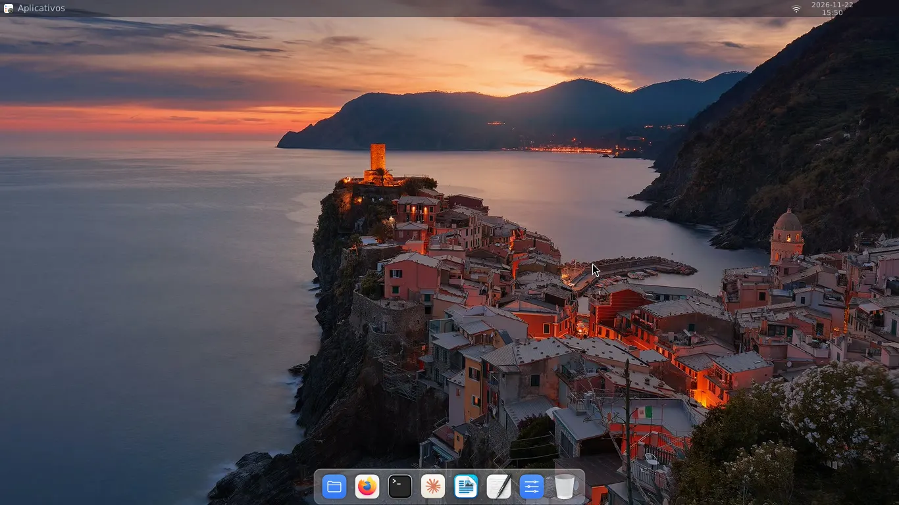
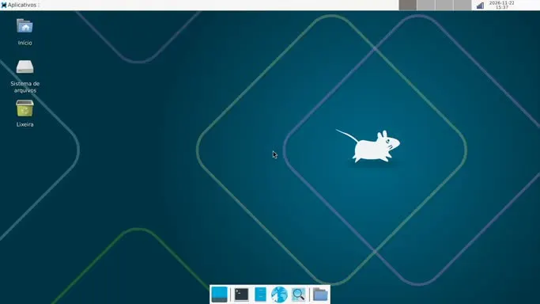
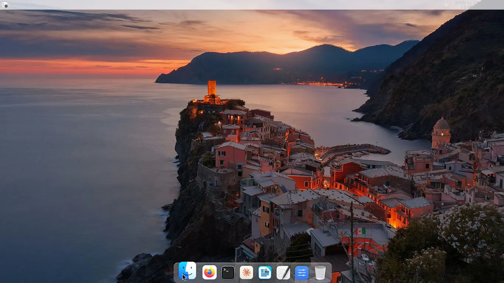
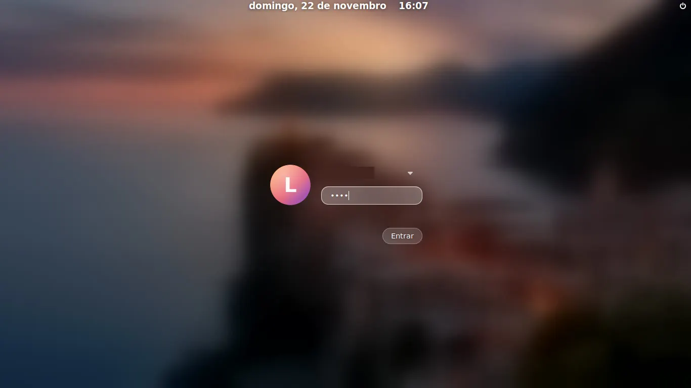
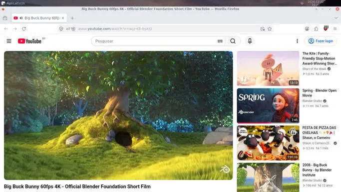

Seu notebook velho não é lixo.
O passo a passo completo pra instalar o Debian 13 e deixar o seu notebook rápido, bonito e com atualizações até 2030. Feito pra quem nunca mexeu com Linux: cada comando pronto pra copiar, uma tela por vez.
Acesso na hora no seu e-mail · garantia de 7 dias


prova real, não promessa
Um notebook de 2016 com 2 GB de RAM.
Positivo com Celeron e HD comum, que levava até 7 minutos pra ligar e não abria o navegador. Sem trocar nenhuma peça. Tudo medido e registrado.
// medido no notebook real, com cronômetro automático. O seu pode dar números diferentes.
como ficou
Cara de Mac. Peso de pena.
Dock com zoom que some quando você maximiza uma janela, barra escura no topo e tela de bloqueio com a foto desfocada. Os prints abaixo são do notebook de verdade.



como funciona
Você compra. Você segue. Ele volta.
Nada de vídeo de 2 horas pra ficar pausando. É um site com uma tela por passo, do jeito que um curso deveria ser.
Acesso na hora
Pagou, o link chega no seu e-mail. Entra só com o e-mail da compra, sem senha pra decorar.
O guia escolhe com você
Três perguntas sobre o seu notebook e o guia marca a trilha certa: Leve ou Mac.
Um passo por tela
Cada comando com botão de copiar e explicação em português simples. Marca como feito e vai pro próximo.
duas trilhas, um sistema
Sempre Debian 13. A interface é que muda.
O Debian é um dos sistemas mais estáveis e leves que existem, e o 13 recebe atualizações de segurança até 2030. Em cima dele, você instala a interface que o seu notebook aguenta.
Pra notebook fraquinho
Menos de 4 GB de RAM ou menos de 4 núcleos.
- Xfce, a interface leve que eu testei no notebook de 2 GB
- Todas as otimizações: memória comprimida, nada de travar quando o navegador pesa, boot mais curto
- Se quiser deixar bonito: dock estilo Mac, ícones, barra no topo e tela de bloqueio, já sem os erros que eu cometi
Pra quem quer o visual lindo
4 GB de RAM ou mais e 4 núcleos ou mais.
- KDE Plasma 6, a interface mais parecida com Mac que ainda roda liso em 4 GB
- Dock flutuante, barra no topo com o menu do app, transparência e desfoque de verdade
- Tela de login e de bloqueio bonitas e animação na hora de ligar
o que tem dentro
8 fases. Do pendrive ao notebook pronto.
Do download no site oficial ao último ajuste. Com link, com print do que você deve ver e com o que fazer se aparecer algo diferente.
Antes de começar
Descubra o nível do seu notebook em 2 minutos, o que você precisa ter e o backup certo.
Preparar o pendrive
Baixar o Debian 13 do site oficial, conferir o arquivo e gravar o pendrive sem cair no erro do Secure Boot.
Instalar
A tecla de boot da sua marca e o instalador tela por tela, com a resposta certa em cada uma.
Deixar tudo funcionando
Wi-Fi, vídeo, som, bluetooth, touchpad e impressora. O driver certo pra cada peça.
Otimizar
As mesmas otimizações que levaram o boot de minutos pra 45 segundos, explicadas uma por uma.
Deixar bonito
Dock, ícones, tema, papel de parede, tela de bloqueio e animação de boot.
Apps do dia a dia
Navegador com bloqueador leve, WhatsApp Web, escritório, PDF, vídeo e impressora.
Manutenção e socorro
Como atualizar e os problemas mais comuns com a solução pronta.
quem fez
Eu sou o Luis, do @cobaia.dev.
Eu testo tudo de verdade antes de ensinar. O vídeo do notebook passou de 340 mil visualizações, e muita gente pediu o passo a passo completo. Este guia é tudo o que eu fiz no meu notebook e no de um seguidor, organizado pra você não repetir os meus erros.
preço de lançamento
Escolha como você quer ressuscitar.
O preço volta ao normal no dia 1º de dezembro.
Guia completo
Você faz sozinho, no seu ritmo.
R$37,90
pagamento único · Pix ou cartão
- As 8 fases, da preparação do pendrive à manutenção
- As 2 trilhas (Leve e Mac) liberadas
- Todos os comandos com botão de copiar
- Socorro com os problemas mais comuns
- Bônus: Claude Code no notebook e pedidos prontos
- Atualizações do guia sem pagar de novo
Suporte pessoal do Luis
Eu pego na sua mão do início ao fim.
R$97,90
pagamento único · Pix ou cartão
- Eu no seu WhatsApp, acompanhando cada fase
- Eu confiro antes se o seu notebook aguenta e qual trilha usar
- Se travar em algum passo, você me manda a foto da tela e eu te digo o que fazer
- Só termino quando ele estiver funcionando e atualizado
- + O guia completo (R$ 37,90) liberado junto, nas 10 primeiras compras
Garantia incondicional de 7 dias
Se não gostar, pede o reembolso na própria Kiwify em até 7 dias e recebe tudo de volta. O acesso ao guia é encerrado junto, automaticamente.
perguntas frequentes
Antes de comprar
Preciso saber programar ou já ter usado Linux?
Não. O guia foi feito pra quem nunca abriu um terminal. Cada comando vem pronto pra copiar e colar, com a explicação do que ele faz.
O meu notebook serve?
Serve se o processador for de 64 bits e tiver pelo menos 2 GB de RAM. Quase todo notebook de 2010 pra cá é de 64 bits. A Fase 0 ensina a conferir em 2 minutos, ainda no Windows. Com 4 GB e 4 núcleos ou mais, você pode ir na trilha Mac. Abaixo disso, na trilha Leve.
Vou perder os meus arquivos?
A instalação apaga o disco do notebook, por isso a Fase 0 tem o backup passo a passo. Salvando antes as fotos, os documentos e os favoritos, você não perde nada.
Serve pra computador de mesa?
Serve. O processo é o mesmo. O guia fala em "notebook" porque é o caso mais comum.
Os programas do Windows vão funcionar?
Programas feitos só pra Windows não rodam direto. Pro dia a dia, quase tudo tem versão pro Debian ou funciona pelo navegador: WhatsApp Web, Google Docs, YouTube, Netflix, Spotify, LibreOffice no lugar do Office. A Fase 6 mostra cada um.
Quanto tempo leva?
De 2 a 3 horas no total, e boa parte é esperando a instalação. Dá pra fazer em dias diferentes: o guia salva onde você parou.
O que eu preciso ter em mãos?
Um pendrive de 8 GB ou mais (ele vai ser apagado), internet (Wi-Fi ou cabo), o carregador do notebook e um outro computador ou o celular pra acompanhar o guia enquanto o notebook instala.
Dá pra voltar pro Windows depois?
Dá, reinstalando o Windows por um pendrive, como em qualquer formatação. Mas a ideia é você não querer voltar.
Como funciona o suporte do Luis?
Depois da compra, eu te chamo no WhatsApp que você deixou no pagamento (ou você me chama pelo botão da sua área). A gente vai fase por fase, eu tiro as dúvidas e olho a foto da tela quando algo sair diferente, até o notebook ficar pronto.
O suporte vem com o guia?
Nas 10 primeiras compras do suporte, sim: o guia completo é liberado junto, automaticamente, no mesmo e-mail. Você leva as duas coisas pelo preço de uma. O contador em cima do botão mostra quantas vagas ainda restam.
Como eu recebo o acesso?
Na hora, no e-mail da compra. Você entra em cobaia-dev.vercel.app/acesso só com esse e-mail. O acesso não tem prazo de validade.
Funciona em MacBook ou Chromebook?
Este guia é pra notebooks e PCs comuns (Intel ou AMD) que vinham com Windows. MacBook e Chromebook ficam de fora.
Tira ele da gaveta hoje.
R$ 37,90 pra ter um notebook rápido de novo, com garantia de 7 dias.
Escolher meu plano